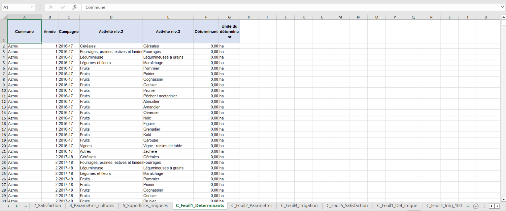
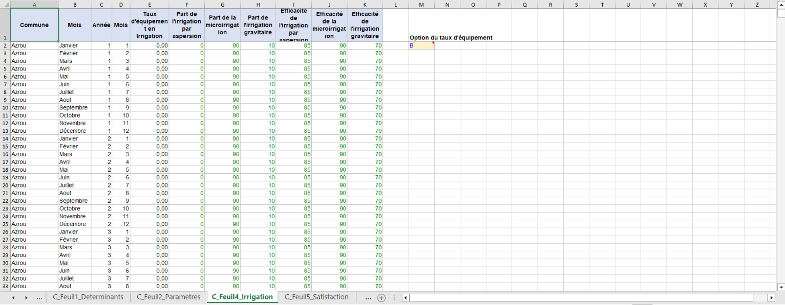
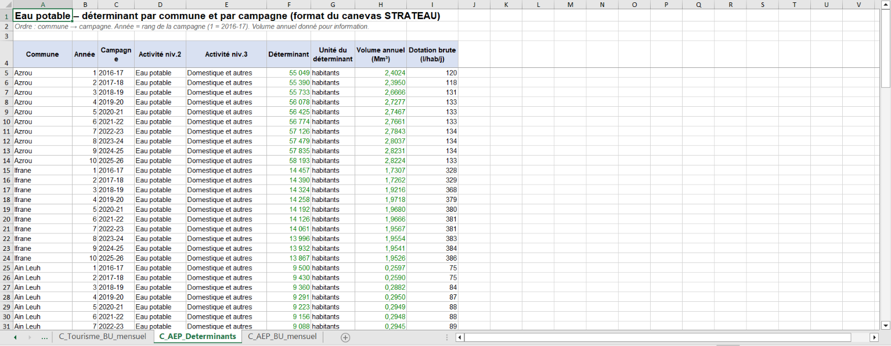
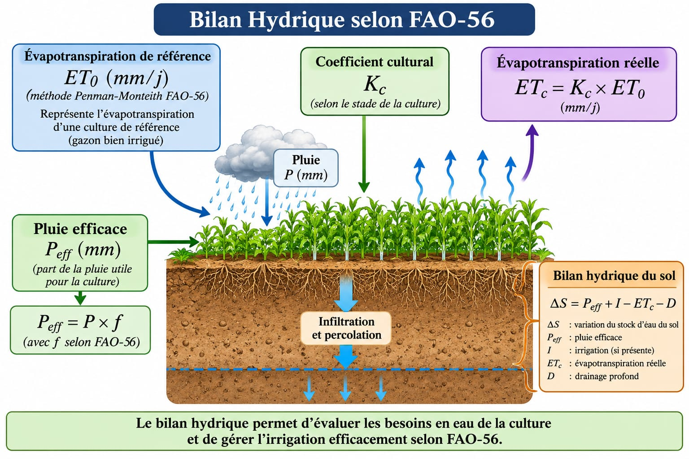
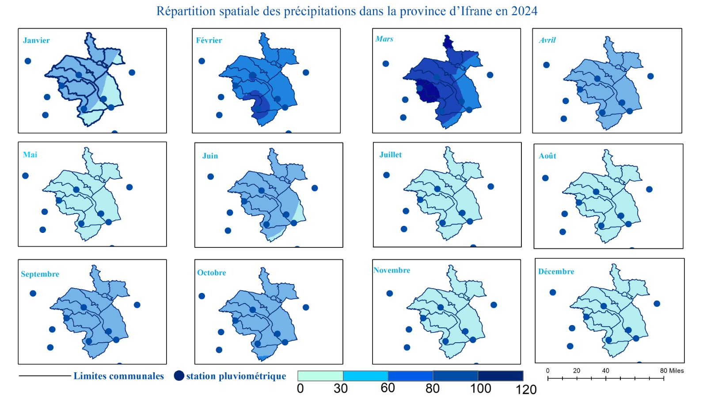
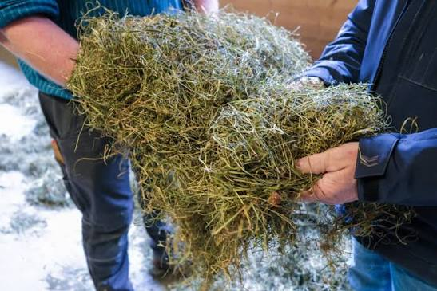
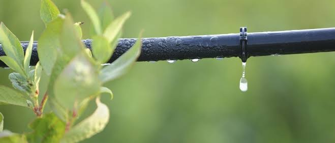
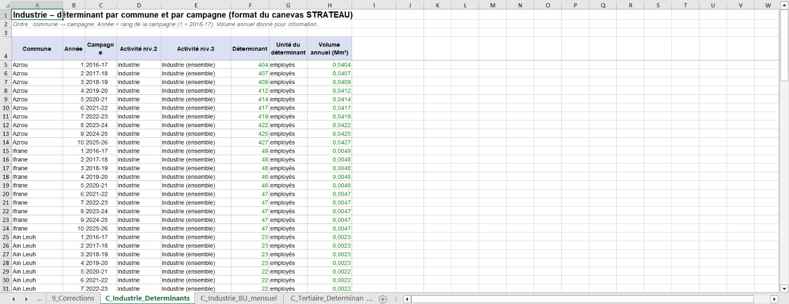
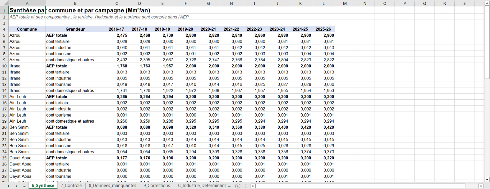

Agriculture, Élevage, Eau Potable, Industrie, Tertiaire et Tourisme (2016–2026)
15 espèces fruitières, céréales, légumineuses, maraîchage & fourrages.
Ovins, Bovins et Caprins ventilés par commune sur 10 ans.
16 stations (ABH Sebou, Oum Er-Rbia, DMN...) & 960 valeurs ETP.
Population urbaine/rurale et enveloppe AEPI du PDAIRE (7,64 Mm³).
6 482 emplois tertiaires et 723 emplois industriels raccordés.
Série HCP prolongée (+5,41 %/an) et ventilée par les lits PNI.
| Organisme Source | Données recueillies, contrôlées et ventilées |
|---|---|
| 1. ABH du Sebou (ABHS) | Intermédiaire central : PDAIRE (volumes et dotations AEPI par horizon), séries des stations pluviométriques et ressources. |
| 2. HCP (Recensements) | Population (RGPH 2014 & 2024), cartographie des établissements économiques (emplois 2023–24), annuaires (nuitées, céréales). |
| 3. DPA d'Ifrane | Superficies communales (27 cultures), registres de plantations fruitières, effectifs du cheptel (2026), $K_c$ locaux et irrigation. |
| 4. ONEE & Parc National | Production AEP ONEE (calage 2017–2019), normes unitaires ONEP/ONEE et capacité d'accueil en lits par commune (PNI). |
| 5. Spatial & Autres (...) | Séries satellitaires et grilles climatiques (TerraClimate ~4,6 km via GEE, stations ABH Oum Er-Rbia/Moulouya/Bouregreg, DMN, FAO-56, etc. ...). |
Conformément au gabarit officiel de STRATEAU, nos tables de préparation alimentent par formules les 5 feuilles du Canevas Agricole (ainsi que 2 feuilles variantes recommandées pour isoler les superficies irriguées) et la matrice communale du Cheptel (Ovins, Bovins, Caprins) :



Pour chaque commune $c \in [1..10]$, culture $i \in [1..27]$ et mois $m \in [1..12]$, le besoin hydrique est évalué selon la méthode du coefficient cultural de la FAO (Bulletin FAO-56) :

ETM -> Besoin net -> Satisfaction (50 % été) -> Efficience (88 %) -> Prélèvement brut" onerror="this.src='https://images.unsplash.com/photo-1592982537447-7440770cbfc9?auto=format&fit=crop&w=1200&q=85'">Pour éviter tout effet de bord sur le relief du Moyen Atlas, nous avons mobilisé un réseau de 16 stations pluviométriques entourant la province :
Contrairement à l'IDW (basé uniquement sur la distance géométrique), l'EBK (Empirical Bayesian Kriging) intègre la dépendance spatiale par variogrammes et estime l'incertitude.

| Critère technique | WaPOR v3 (Écarté) | TerraClimate (Retenu) |
|---|---|---|
| Résolution spatiale | ~19 km (trop grossière) | ~4,6 km (adaptée aux communes) |
| Couverture temporelle | Disponible seulement dès 2018 | Complète : 2017–2024 (8 ans) |
| Qualité de la série | Validation locale insuffisante | 960 valeurs (0 donnée manquante) |
| Rang & Culture Irriguée | Surface (ha) | Intensité ($m^3/\text{ha}$) | Besoin Net ($Mm^3$) | Besoin Brut ($Mm^3$) |
|---|---|---|---|---|
| 1. Pommier | 6 609 ha | 4 070 m³/ha | 26,89 Mm³ | 34,60 Mm³ |
| 2. Pomme de terre | 720 ha | 9 080 m³/ha | 6,54 Mm³ | 8,58 Mm³ |
| 3. Prunier | 1 741 ha | 3 450 m³/ha | 6,01 Mm³ | 7,73 Mm³ |
| 4. Maïs irrigué | 1 144 ha | 4 730 m³/ha | 5,41 Mm³ | 7,58 Mm³ |
| 5. Cerisier | 1 364 ha | 3 440 m³/ha | 4,69 Mm³ | 6,03 Mm³ |
| 6. Oignon | 476 ha | 8 690 m³/ha | 4,14 Mm³ | 5,43 Mm³ |


| Commune | Surf. Totale | Surf. Irriguée | Besoin Net ($Mm^3$) | Besoin Brut ($Mm^3$) |
|---|---|---|---|---|
| 1. Tigrigra | 14 388 ha | 3 928 ha | 17,05 Mm³ | 22,19 Mm³ |
| 2. Sidi El Makhfi | 18 424 ha | 3 108 ha | 13,07 Mm³ | 16,96 Mm³ |
| 3. Dayat Aoua | 2 504 ha | 1 948 ha | 8,25 Mm³ | 10,67 Mm³ |
| 4. Oued Ifrane | 9 972 ha | 1 854 ha | 8,00 Mm³ | 10,69 Mm³ |
| 5. Ain Leuh | 6 226 ha | 1 587 ha | 6,40 Mm³ | 8,27 Mm³ |
| 6. Tizguite | 4 885 ha | 1 135 ha | 4,75 Mm³ | 6,32 Mm³ |
| 7. Timahdite | 12 204 ha | 822 ha | 3,97 Mm³ | 5,49 Mm³ |
| 8. Ben Smim | 3 229 ha | 1 088 ha | 3,74 Mm³ | 4,84 Mm³ |

| Donnée | Source officielle | Couverture réelle | Limite & Traitement |
|---|---|---|---|
| AEPI & dotations | PDAIRE (tab. 7, ann. A-1) | Horizons 2018, 2020, 2025, 2030 | Interpolée entre horizons |
| Population | RGPH 2014 et 2024 (HCP) | 2 recensements par unité | Interpolée (156 304 $\rightarrow$ 161 953) |
| Emplois | Établissements HCP | 2023–24 : 6 482 tert., 723 ind. | Ventilés selon la démographie |
| Nuitées & Lits | Annuaires HCP & PNI | Province (2017–2023) & Lits PNI | Prolongées (+5,41 %) & lits |
À partir de la cartographie HCP 2023–24 (6 482 emplois tertiaires et 723 emplois industriels permanents hors administration publique), l'hypothèse retenue est que l'emploi évolue proportionnellement à la démographie de chaque commune :
| Canevas STRATEAU | Déterminant & Activité | Besoin unitaire annuel | Base & Hypothèse |
|---|---|---|---|
| 1. Tertiaire | Employés • Commerce et services | 9 m³ / employé / an | 40 L/j ouvré $\times$ 230 j (poids mensuel = 1) |
| 2. Industrie | Employés • Industrie (ensemble) | 100 m³ / employé / an | Hypothèse basse de travail (poids = 1) |
| 3. Tourisme | Nuitées • Hébergement classé | 0,25 m³ / nuitée | 250 L/nuitée (Norme ONEP/ONEE) |
| 4. Eau potable | Habitants • Domestique et autres | Part résiduelle AEP | $\text{AEP Totale} - (\text{Ind.} + \text{Tert.} + \text{Tour.})$ |
Limite : un seul niveau d'activité par secteur (alors que le template détaille les branches). STRATEAU n'ayant pas pu être exécuté, le besoin a été calculé hors outil.


Le croisement des déterminants et des dotations montre que les trois secteurs totalisent 201,9 milliers de m³/an (0,2019 Mm³), soit 2,6 % de l'AEPI provinciale, mais jusqu'à 11,3 % de l'AEP à Ben Smim :
| Commune | Tert. ($10^3\text{ m}^3$) | Indus. ($10^3\text{ m}^3$) | Tour. ($10^3\text{ m}^3$) | Total ($10^3\text{ m}^3$) | % AEP |
|---|---|---|---|---|---|
| 1. Azrou | 31,0 | 42,7 | 3,9 | 77,6 | 2,7 % |
| 2. Ben Smim | 3,1 | 15,0 | 29,4 | 47,5 | 11,3 % |
| 3. Ifrane | 12,9 | 4,7 | 29,9 | 47,4 | 2,4 % |
| 4. Tigrigra | 1,2 | 1,7 | 3,2 | 6,0 | 2,0 % |
| 5. Sidi El Makhfi | 2,9 | 2,5 | 0,3 | 5,6 | 1,1 % |
| 6. Ain Leuh | 2,2 | 2,2 | 1,2 | 5,6 | 1,9 % |
| 7. Timahdite | 2,3 | 1,6 | 0,5 | 4,4 | 1,1 % |
| 8. Oued Ifrane | 1,2 | 1,8 | 0,7 | 3,7 | 1,3 % |
| 9. Tizguite | 0,9 | 0,9 | 0,4 | 2,2 | 0,7 % |
| 10. Dayat Aoua | 1,1 | 0,2 | 0,6 | 1,9 | 0,9 % |
| PROVINCE | 58,7 | 73,2 | 69,9 | 201,9 | 2,6 % |
La consolidation de l'ensemble des secteurs modélisés sur les 10 communes d'Ifrane met en évidence le poids déterminant du secteur hydro-agricole face aux usages urbains et économiques :
| Secteur d'Usage (Province d'Ifrane) | Besoin Net / Réseau | Volume Brut / Rationné | Part du Bilan Net |
|---|---|---|---|
| 1. Irrigation Agricole (15 470 ha) | 65,24 Mm³/an | 85,43 Mm³ (61,15 rationné) | 87,81 % |
| 2. AEPI Domestique & Autres (161 953 hab.) | 7,44 Mm³/an | 7,44 Mm³/an (PDAIRE) | 10,02 % |
| 3. Abreuvement du Cheptel (3 espèces) | 1,41 Mm³/an | 1,41 Mm³/an (627 010 têtes) | 1,90 % |
| 4. Industrie Raccordée (735 emplois) | 0,0732 Mm³/an | 73 240 m³/an | 0,10 % |
| 5. Tourisme Classé (279 591 nuitées) | 0,0699 Mm³/an | 69 898 m³/an | 0,09 % |
| 6. Tertiaire Privé (6 537 emplois) | 0,0587 Mm³/an | 58 728 m³/an | 0,08 % |
| TOTAL PROVINCE D'IFRANE | 74,29 Mm³/an | 94,48 Mm³/an (70,20 bridé) | 100,0 % |
L'architecture complète des Canevas STRATEAU est opérationnelle sur les 10 communes et les 10 campagnes (2016–2026). Pour remplacer nos hypothèses de ventilation et nos ratios unitaires généraux par des mesures réelles, des courriers officiels de demande de données complémentaires ont été adressés aux organismes partenaires :
| Organisme sollicité | Données attendues suite aux courriers officiels | Impact sur le modèle STRATEAU |
|---|---|---|
| ONEE (Branche Eau) | Volumes réels distribués et facturés par centre et par catégorie d'abonnés (ménages, administrations, hôtels, industriels). | Calage exact des dotations nettes et des rendements de réseau par commune. |
| ABH du Sebou | Registre des volumes de prélèvement autorisés pour les grands consommateurs autonomes (embouteillage Ben Smim, Al Akhawayn...). | Intégration séparée des gros usagers hors réseau public AEPI. |
| Délégation Tourisme / PNI | Nuitées mensuelles par commune (2024–2026) et vérification de la capacité réelle en lits (notamment à Ben Smim). | Saisonnalité mensuelle réelle du tourisme (pics d'hiver et d'été). |
| DPA d'Ifrane | Séries historiques communales antérieures à 2022 et détail des modes d'irrigation par filière culturale. | Affinement des clés communales historiques et des taux de satisfaction. |
Comme l'a démontré notre bilan global, l'irrigation agricole gouverne près de 88 % de la demande en eau d'Ifrane. L'affinement après-sommet reposera donc sur la convergence entre nos canevas statistiques et les travaux de télédétection (Sentinel-2) et d'indices spectraux (NDVI, NDWI) exposés dans la partie précédente de cette présentation :